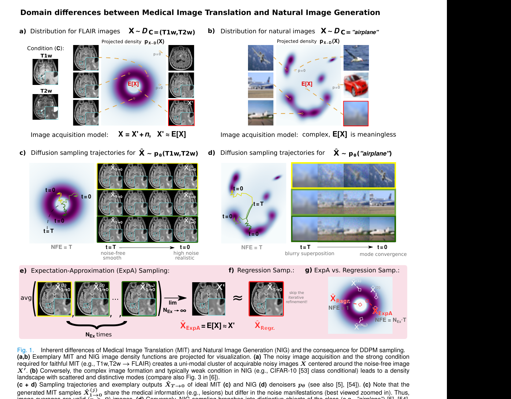
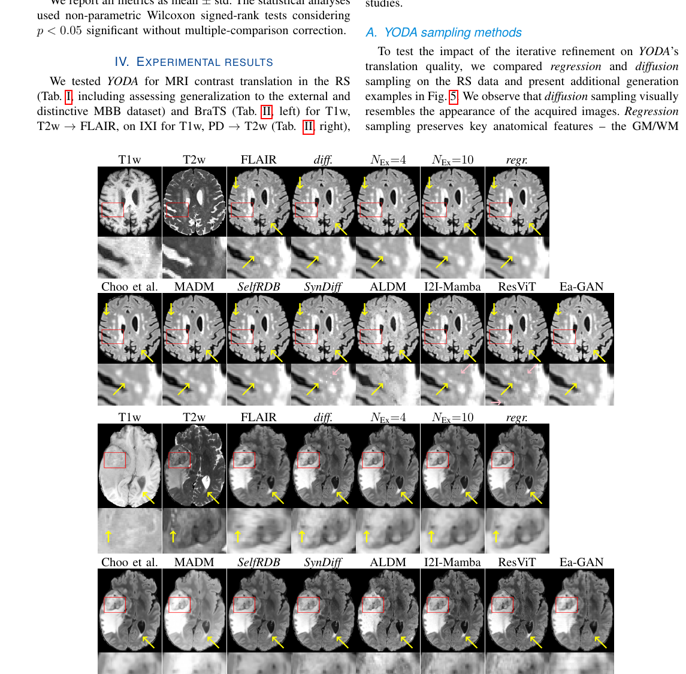

医疗图像翻译里，扩散模型真的比回归更好吗？这篇论文的答案几乎是“没必要神化扩散”。
论文提出 YODA，一套面向医疗图像翻译的 2.5D diffusion 框架，但它最激进的结论反而不是“我们做了个更强的扩散模型”，而是：在强条件的医疗图像翻译任务里，扩散迭代往往只是在复制噪声、提升写实感，却没有带来更多医学信息；直接采用回归式的一步预测，常常更快、也更准。作者还提出 ExpA 采样去平均扩散样本，进一步证明扩散样本在大量平均之后，会逐渐逼近回归输出。
自然图像生成追求 realism，但医疗图像翻译更该追求 fidelity。对 MRI 到 FLAIR、MRI 到 CT 这类任务来说，复制采集噪声和“看起来像真图”并不等于保留了更多医学信息。
它不是只和一些旧 baseline 比 PSNR，而是直接质疑整个社区把 GAN / diffusion 从自然图像经验硬套到医疗翻译上的默认前提。
五个数据集、多个对比方法、下游任务验证、资源消耗对比，再加上对 diffusion 样本平均过程的分析，构成了一条很完整的论证链。
YODA regression sampling 在 required test set 上达到 33.66 dB PSNR。
表 I 里，YODA 回归采样对比 ExpA NEx=10 的时间差非常夸张。
表 IV 中大版 YODA 的训练代价低于多种 diffusion / bridge 基线。
在 MRI 到 CT 上，ExpA NEx=10 有小幅优势，但测试集只有 4 个病例。
YODA 是一个 2.5D diffusion framework。它利用正交切片做体数据建模，试图在 3D 一致性和可训练性之间找折中。这部分是工程设计。
作者发现：DM 在最开始那一步已经给出了很接近目标的预测，后面的迭代 refinement 主要在往图里重新注入看起来更“真实”的噪声。因此他们直接保留这一步预测，把后续 refinement 砍掉，作为 regression sampling。
为了更公平地比较 diffusion 和 regression，作者让扩散模型多次采样后做平均，称为 Expectation-Approximation。这个设计很妙，因为它把“扩散样本平均后越来越像回归结果”这件事显性化了。
它并没有凭一句“医疗任务不需要 realism”就直接下结论，而是通过图像质量指标、下游分割任务、噪声分析和资源成本一起证明：在强条件医疗翻译中，真实感和信息保真度并不是同一个目标。

这张图是全文灵魂。左边说明医疗图像在强条件下更像围绕无噪声真值的单峰分布，右边说明自然图像生成更像多模态分布。于是，对医疗翻译来说，平均到期望值是有意义的；对自然图像生成来说，平均反而会产生无意义的模糊叠加。

在 RS 和 BraTS 的例子里，diffusion 结果更像采集图像，但 regression 结果对病灶与解剖结构的保持更稳定，同时少了 Salt-and-Pepper 一类伪纹理。这个图和表格结果一起，构成“少写实、多保真”的核心证据。
它把一个很多人“隐约觉得不对劲”的现象，变成了可度量、可视化、可比较的结论：医疗翻译里 diffusion 的很多 realism，可能只是噪声复制，而不是信息增益。
这不是“回归永远比扩散好”的通用定理，而更像“在强条件医学翻译里，别把自然图像生成的审美指标错当成医学信息质量”。
这篇论文非常值得看，因为它会直接影响模型选择与评估 protocol：与其盲目堆更复杂的 generative machinery，不如先问清楚任务到底需要 realism 还是 fidelity，需不需要下游任务验证，以及 compute 花得到底值不值。
它最像一篇“领域纠偏”论文。不是靠一个新 trick 赢一点点指标，而是试图把医疗图像翻译从“谁更像真图”拉回“谁保留了更多医学信息”这个更正确的评价中心。
这篇论文的最大贡献，不是 YODA 本身，而是它非常系统地说明了：在医疗图像翻译里，昂贵的扩散迭代往往只是在购买“更像噪声真图的外观”，而不一定购买到“更多有用医学信息”。如果你的任务是强条件医学翻译，这篇 paper 值得放进必读清单；如果你的任务更接近开放式生成，就要谨慎使用它的结论边界。
论文标题：Regression is all you need for medical image translation
arXiv：https://arxiv.org/abs/2505.02048
PDF：https://arxiv.org/pdf/2505.02048
alphaXiv 全文 markdown fallback：https://alphaxiv.org/abs/2505.02048.md
代码仓库：https://github.com/Deep-MI/YODA
说明：本页基于论文原文、arXiv 摘要和 alphaXiv 提供的全文 markdown 进行整理。优缺点部分属于本站的审查性总结，不是论文作者的自述。